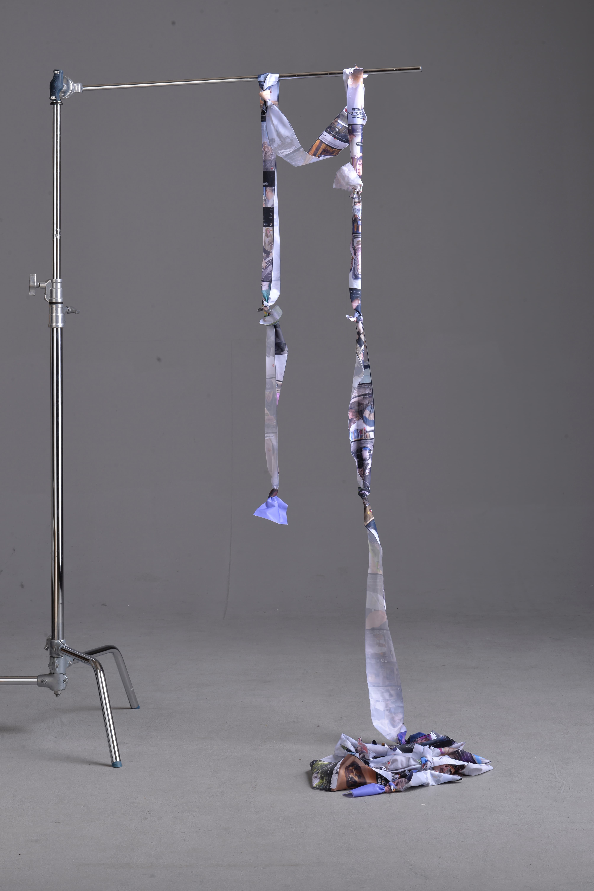
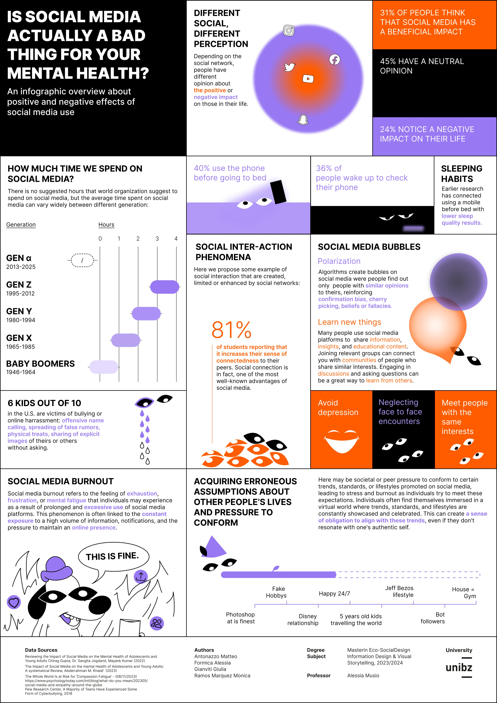

INFORMATION
DESIGN
2022
In the "Information Design and Visual Storytelling" course held by Alessia Musio, we decided to answer with data to the question "Is social media actually a bad thing for your mental health?". The result is a poster layouted as a newspaper page.
By analyzing scientific papers and academic articles, we created a final poster that offers an overview of the positive and negative relationships between social media use and mental health. Throughout this project, we deepened our understanding of data culture, learned how to use data to tell compelling stories, and explored new tools such as RawGraphs and Flourish.
For the storytelling component, we developed a data physicalization titled “85” — a collection of 85 Instagram Reels printed on fabric. The number 85 represents the average number of Reels an Instagram user watches in a day.


